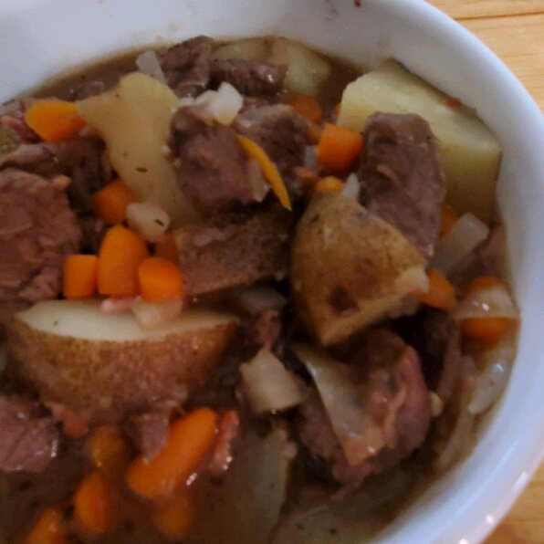

Irish Lamb Stew

Description
What better for cold fall days than a delicious
Irish Stew? This is my grandmothers recipe passed down for generations.
There is a great history behind this stew, and I hope you enjoy it as much as I do!
Ingredients
- 1 1/2 pounds thickly sliced bacon, diced
- 6 pounds boneless lamb shoulder, cut into 2 inch pieces
- 1/2 tsp salt
- 1/2 cup all-purpose flower
- 3 cloves garlic, minced
- 1 large onion, chopped
- 4 cups beef stock
- 2 tsp white sugar
- 4 cups diced carrots
- 2 large onions, cut into bite-size pieces
Steps
- Place bacon in a large, deep skillet. Cook over medium high heat until evenly brown. Drain, crumble, and set aside.
- Put lamb, salt, pepper, and flour in large mixing bowl. Toss to coat meat evenly. Brown meat in frying pan with bacon fat.
- Place meat into stock pot (leave 1/4 cup of fat in frying pan). Add the garlic and yellow onion and saute till onion begins to become golden. Deglaze frying pan with 1/2 cup water and add the garlic-onion mixture to the stock pot with bacon pieces, beef stock, and sugar. Cover and simmer for 1 1/2 hours.
- Add carrots, onions, potatoes, thyme, bay leaves, and wine to pot. Reduce heat, and simmer covered for 20 minutes until vegetables are tender.